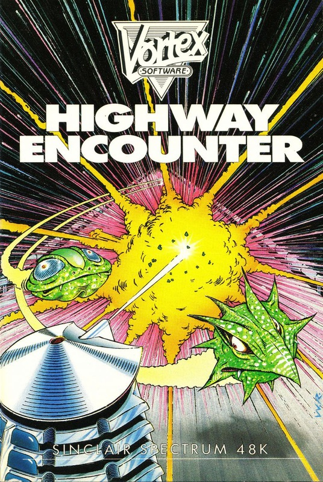
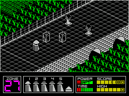
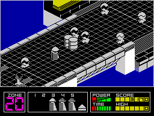

Highway Encounter


{kind=link}

| Publisher: | Vortex |
| Price: | £7.95 |
| Year: | 1985 |
| Source: | CRASH, Issue 20 |

It’s been a long time since we have received anything from this well known and widely acclaimed author; his 3D graphics are both distinctive and cleverly applied.
Highway Encounter has a simple plot. You control a droid or Vorton, which has the simple task of taking an explosive device from one end of a straight road to the enemy base at the other. If the device is successfully delivered then the enemy advance will be halted and you will have won. You view the action from an oblique aerial angle, seeing one complete section of road at a time. In all you have a total of five droids under your command, but you can only directly control one at any given time. The remaining droids are automatically programmed to push the device down the centre of the road until they meet an obstruction whereupon they come to a dead stop.

a Dalek and and dustbin? The little
droidy fellow’s real cute — dig those
hairy laser bolts.
The control droid is steered in a similar way to the robot in Alien 8. To move in a given direction you must first rotate until the droid is facing the appropriate way and then move forward. This is a difficult system to come to terms with: the droid reacts as if subject to inertia, and it takes some time to accelerate to full speed and seemingly even longer to come to a halt.
At first sight the game looks very simple — so long as the road ahead is clear the explosive device and automatic droids will make their way down the middle of the road. They will only stop if their path is blocked, as it frequently will be. Most of the blockages are caused by large barrels and boxes left lying around but very soon you realise that although these objects are a pain they can in fact be put to very good use. You see, the enemy aren’t just sitting back waiting for you and your bomb to turn up on their doorstep... they have some pretty smart defence systems waiting for you. The first type take the form of stationary mines, if you collide with one then you lose a droid and will have to take over one of the automatic ones. The mobile mines are a bit more of a problem, they slide back and forth across the width of the road and while you can dodge them with the controlled droid, the only way of ensuring a safe passage for the rest of your party is to block the mines in against the wall with boxes or barrels.
Generally the controlled droid can nudge objects along the road, but it is often quicker to manoeuver them into place by firing laser bolts at them. Sometimes more than one object can be moved at a time, but the whole operation becomes a lot slower. Beware of the objects that look like boxes but in fact melt when fired at. The laser fires in bolts of three blasts, each blast sending out a sort of hairy bullet thingy which hits home with devastating effect. However, after firing a burst of three bolts the laser pauses briefly to re-charge and this can be a bit of a problem when it comes to dealing with the third type of defence system — the enemy’s droids.

the nasties and let the good guys get
down the road. Droid fun in HIGHWAY
ENCOUNTER, beautifully projected in
3D.
The enemy machines come in all shapes and sizes, and some just seem to wander about while others actively hunt for you. They vary in the way they move, while some droids are prepared to try a frontal assault and are easy to take care of, others sneak up on you while their allies draw your fire. Clearing a path along the highway becomes progressively more difficult. To start with, you find it fairly easy to move items around to block the mines off, later on, not only do the mines appear in larger groups, but they move more erratically and your attempts to trap them will be hampered by ever increasing numbers of nasties attacking you.
To make matters worse the game has a time limit for completion. The amount of time remaining is shown by a bar graph on the lower part of the screen. Within the same area you are told how many droid Vortons you have left and which of the 30 zones you are in. Points are awarded according to how many droids have reached which zone. The more droids you have surviving and the nearer the end of the road they are, the more points you will score.
CRITICISM
“I knew it, for all these years the Daleks have been given bad press. Highway Encounter gives them a chance to save a World (actually they are Vortons, but they look something like a cross between a Dalek and a dustbin, and yes, I have heard the joke). The game boasts excellent 3D graphics — Ultimate-type both in design and quality. This is a very playable and highly addictive game. I loved the introduction as well.”
“I am very impressed by this highly original and excellently designed game. The idea of having to chunter a bunch of droids down a road may sound a little boring, but wait until you try. Clearing the way through calls for a bit of thought but most of all you had better have a steady nerve when you meet the enemy droids. The lasers are devastating but their repeat rate is low, and it’s all to easy to fire of a couple of panic bursts to find yourself with an ‘empty’ gun when it comes to killing the nasty bearing down on you. Time and time again I found myself looking for strategic spots from which to fire, some sort of cover so I could only be attacked from one direction and thus forcing the enemy into a ‘killing zone’. This is a superb game, the gameplay is fast and thrilling, the graphics quick smooth and detailed; absorbing? Blotting paper doesn’t even come near.”
“This has to be one of the best games of the year. It has 3D graphics which would make Ultimate’s hair stand on end. The clarity of the graphics was surprising — with most other 3D graphics I tend to get a bit ‘lost’ in them, and my eyes start playing tricks on me after a while. None of these things happened to me while I was playing this one. All the characters are very well drawn and nicely animated. There are many different types of nasty, some of which move in a set pattern, and on those screens you have to devise a routine which will get you and your ‘Lazertron’ across safely. When you’re up against aliens which move around erratically it is best to blast hell out of them. I really enjoyed playing Highway Encounter but unfortunately I think it will be easy to complete in a short amount of time and I will probably get bored with it then.”
COMMENTS
| Control keys: | 1/Q accelerate/decelerate, O/P left/right, space to fire |
| Joystick: | Interface Two, Kempston and Protek |
| Keyboard play: | Very fast, probably better than using a joystick |
| Use of colour: | Road and objects in black and white but nice use of colour for the roadside graphics |
| Graphics: | Brilliant |
| Sound: | Some very nice effects |
| Skill levels: | One |
| Lives: | Five |
| Screens: | 30 and a surprise! |
| General rating: | Magic |
| Use of computer: | 85% |
| Graphics: | 96% |
| Playability: | 95% |
| Getting started: | 93% |
| Addictive qualities: | 96% |
| Value for money: | 84% |
| Overall: | 95% |